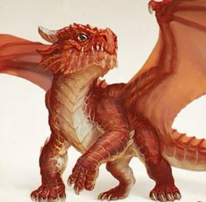
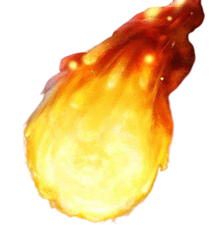
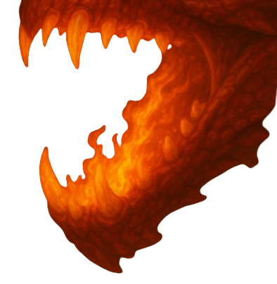

Isqueiro

Identidade
- Interpretado: Mestre
- Idade: 2 anos
- Altura: 1,45
- Antecedência: orfao
- Associação: Manuel
- Hobbs: correr e brincar com Manuel
- Personalidade: alegre, curioso e obediente (e tem Miopia)
Historia
nasceu e cresceu junto de seu dono,manuel, juntos viveram aventuras e passaram por momentos incríveis, explorando cavernas, campos abertos, procurando alimentos, conhecendo outros animais, acompanhando manuel para onde ele fosse,ate eles começarem a se aventurar mais e explora melhor o mundo, vivendo e vendo coisas de tirar o folegoAparencia
Escamas: Sua pele é coberta por escamas vermelhas vibrantes, com tons mais claros na barriga e parte interna das patas.
Cabeça: Seu rosto expressa curiosidade e vivacidade. Com chifres curtos e dentes visíveis, Olhos grandes e expressivos, seus olhos transmitem uma mistura de energia juvenil e um toque travesso.
Asas: Bem desenvolvidas, suas asas alaranjadas estão parcialmente abertas.
Postura: Anda com altivez e confiança, com uma das patas dianteiras levemente levantada.
Status e aptidões
-
Vida [32]
-
Defesa [14]
-
Força [+3]
-
Destreza [+1]
-
Constituição [+2]
-
Inteligencia [0]
-
Sabedoria [+3]
-
Carisma [0]
Ataques
| Ataque | Descrição |
|---|---|
|

Bola de fogo |
O dragão cospe uma bola de fogo Que causa dano e incendiea o Inimigo Dano: 3d6+3. (Acerto sabedoria) Dano de Queimadura: 1d6 por 5 rodadas |
|

Mordida Incendiaria |
Isqueiro incendiea sua boca e morde o inimigo, queimando o corpo do inimigo Dano: 1d15 + força (+3). (Acerto força) (Chamas: 1d6 + 2 rodadas: 5) |